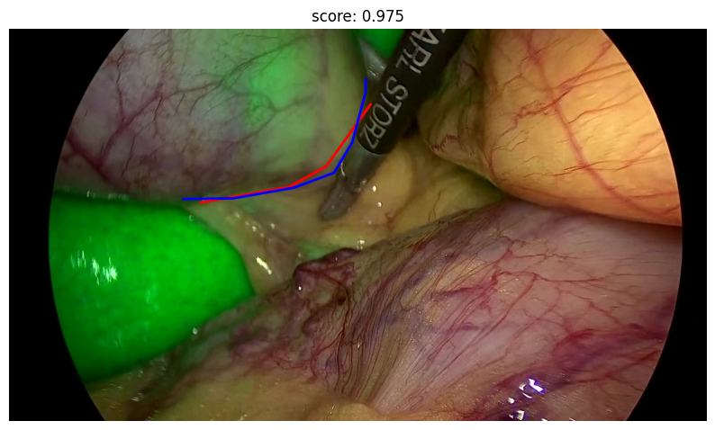
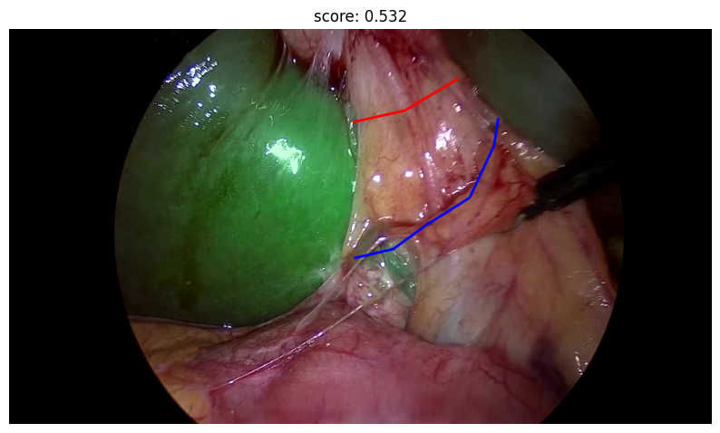

Meeting CAMMA 2026.04.14
Luc / Shih-Min / Pietro / Nicolas
Agenda
- Metrics for annotator's concordance
- CBD detection
- Some tooling
Metrics for annotator's concordance
1. Feasability (pre-HCT only, 508 frames)
|
S4b |
RS |
R4U |
Surg Incision Line |
No Go Line |
| Annotator 1 |
94.09% |
44.49% |
40.55% |
76.77% |
91.34% |
| Annotator 2 |
94.09% |
44.49% |
38.98% |
91.73% |
|
| CBD |
soft |
hard |
total |
| Annotator 1 |
36.93% |
56.16% |
93.09% |
| Annotator 2 |
46.39% |
52.10% |
98.48% |
2. CBD Bbox agreement
- Mean IoU: 0.592
- >= 0.5: 72.61%
Metrics for annotator's concordance
3. R4U line and Surgical incision line Agreement
Metrics for annotator's concordance
3. R4U line and Surgical incision line Agreement
Line Distance
- Densify the two lines and normalize by length: ($\gamma_1, \gamma_2$)
- Compute optimal transport cost: $\pi_\varepsilon^\star(s,t)$
- Compute image diagonal (without black borders): $D(I)$
- Normalize cost by diagonal and amortize with exponential decay
Pompous formula:
$$
\mathrm{score}
=
\exp\!\left(
-\frac{1}{\alpha D(I)}
\iint \|\gamma_1(s)-\gamma_2(t)\|\, d\pi_\varepsilon^\star(s,t)
\right)
$$
Metrics for annotator's concordance
3. R4U line and Surgical incision line Agreement
Line Distance
|
Mean |
Std |
Min |
Max |
| R4U |
0.83 |
0.11 |
0.56 |
0.99 |
| Surgical Incision Line |
0.81 |
0.13 |
0.32 |
0.99 |
Metrics for annotator's concordance
3. R4U line and Surgical incision line Agreement
Line Distance

High score

Low score
Metrics for annotator's concordance
4. Geometric safety
CBD crossing rate & line-bbox distance
min distance expressed in pixels for now
a. Surgical Incision Line
|
Cross-rate |
Min distance |
| Mean |
Std |
Min |
Max |
| L1 - B1 |
4.82% |
67.16 |
56.99 |
0.00 |
291.25 |
| L2 - B2 |
18.67% |
51.49 |
57.11 |
0.00 |
291.25 |
| L1 - B2 |
22.89% |
50.93 |
57.23 |
0.00 |
386.30 |
| L2 - B1 |
13.25% |
70.15 |
65.18 |
0.00 |
300.56 |
Metrics for annotator's concordance
4. Geometric safety
CBD crossing rate & line-bbox distance
min distance expressed in pixels for now
b. R4U Line
|
Cross-rate |
Min distance |
| Mean |
Std |
Min |
Max |
| L1 - B1 |
79.07% |
5.61 |
14.63 |
0.00 |
77.07 |
| L2 - B2 |
69.77% |
7.12 |
22.52 |
0.00 |
101.67 |
| L1 - B2 |
90.70% |
2.01 |
8.35 |
0.00 |
62.39 |
| L2 - B1 |
52.33% |
23.01 |
34.40 |
0.00 |
132.76 |
First stage of pipeline
CBD detection (ICG only)
- SAM3 LoRA finetuning (class name as prompt)
- Use SAM3 video masks as prior for CBD detection
- Small RGB + mask fusion
- Lightweight temporal Transformer
First stage of pipeline
CBD detection (ICG only)
High level architecture
Input
- 5 seconds leading to the frame with CBD gt
- 5 fps (25 frames total)
- RGB frames + SAM3 masks with tracking module
First stage of pipeline
CBD detection (ICG only)
High level architecture
Model
- RGB frames encoded by convnext-small pretrained (unfreeze last stage): 16x16 features grid
- two masks from SAM3 into a shallow dedicated convnet to project on the same grid
- fuse RGB and mask features early fusion: concatenation, 1x1 conv projection: $(25, 16, 16, d)$
- Bidirectional Transformer (each location in the final grid attends to both earlier frames and other spatial regions)
- clip token: predicts soft vs hard (small classification head)
- learned box query attempts to the last frame tokens only predicts bbox (small regression head)
- Hard IoU: ~0.6
- Soft IoU: ~0.5
- Type acc: ~0.85
First stage of pipeline
CBD detection (ICG only)
Hard
First stage of pipeline
CBD detection (ICG only)
Soft
Some tooling
Package for annotated video dataset management
Splitted into two smaller, cleaner packages